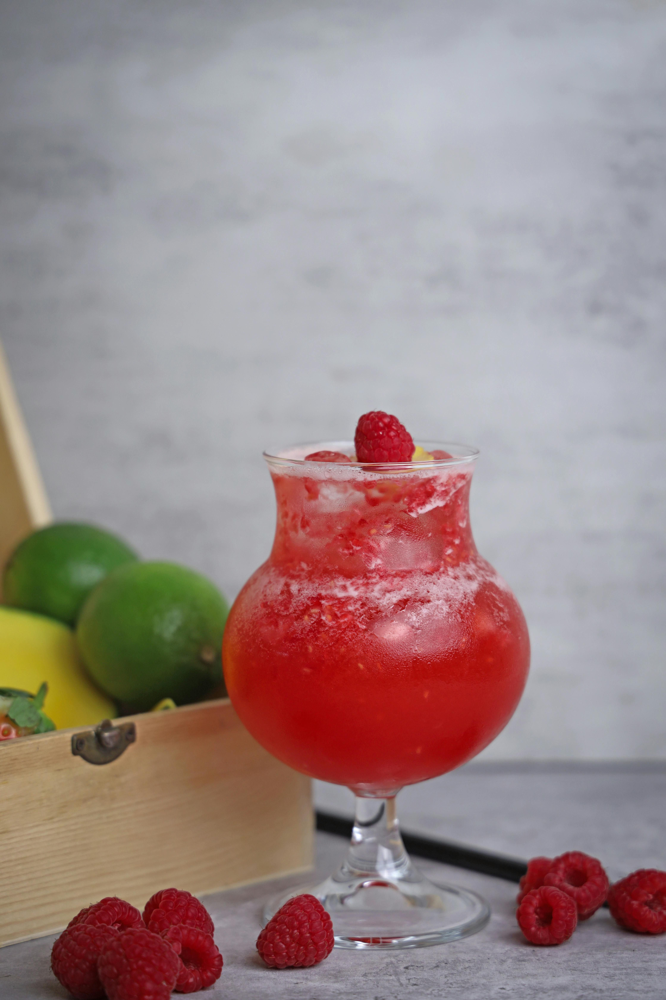

Raspberry Citrus Mocktail

Description
Every meal needs a refreshing thirst quencher. To help you have an amazing pairing with our various dishes,
us Odin Recipes have found this amazing refreshing asian inspired Raspberry Calanmansi Beverage.
Try it with our Orange Chicken and Fried Rice!
Prep time:
10 minutes
Total Time:
10 minutes
Servings
2
Yield:
2 Mocktails
Ingredients
- 10 fresh raspberries
- 12 Tablespoon Water,divided
- 2 Teaspoons Honey,or to taste
- 1 1/2 Teaspoons White Sugar,or to taste
- 2 cups Ice Cubes
- 1(12 fluid ounce) canned grapfruit-flavored seltzer (such as Sanpellegrino ®)
- 2 Calamansi Lime,halved
Directions
- Use a fork or spoon to mash raspberries in a
small bowl. Mix in 2 tablespoons water. Stir in
honey and sugar until dissolved. Straininto another small bowl
and set aside.
- Fill a glass with Ice. Add remaining water and seltzer.
Squeeze in juice from the lime. Slowly pour in the raspberry mixture;
it will sink to the bottom and create a pretty ombre effect. Get the maximum Raspberry
flavor by mixing your drink before taking a sip.